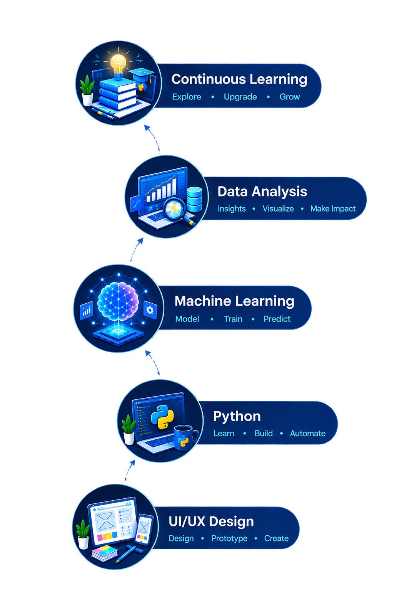

POORNIMA.
I'm a Computer Science Engineering Graduate specializing in Python, SQL, Power BI, and Machine Learning. Eager to engineer solutions for real-world business challenges and grow as a Data Analyst.

ABOUT ME
⚡My journey into tech started with curiosity about people and how technology makes their lives easier. Then I began with UI/UX, and the Figma tool taught me to look beyond the interface, into the problem underneath. That curiosity pulled me into Python and SQL— a new way of thinking — and led me to start developing projects using Machine Learning.
⚡Stepping into Power BI to learn insights excites me most: how data quietly tells a story and turns ideas into something real. Each project in my portfolio reflects real-world challenges I've tackled, showcasing my technical abilities and dedication to building meaningful, impactful solutions.
TECHNICAL SKILLS
⚡Python
Backend services, automation scripts, backbone of AI and ML evaluation pipelines.
⚡SQL
Relational schema design to handle data, complex joins, indexing, and aggregations.
⚡Power BI
DAX measures, dimensional data modeling, and interactive KPI tracking.
⚡Flask APIs
RESTful endpoint architecture for real-time model inference and web apps.
FEATURED PROJECTS
LIVESTOCK DISEASE PREDICTION API

EXPENSEIQ - SMART ANALYSIS
HARVESTHUB: ORGANIC PRODUCTS

CYBER:NETWORK INTRUSION DETECTION
INTERNSHIP EXPERIENCE
AI / ML Intern
POLENZA TECH SOLUTIONS
⚡Developed an image classification model for automated waste segregation using Python, TensorFlow and Keras.
⚡Preprocessed and augmented image datasets to improve data quality and support model training.
⚡Gained hands-on experience in improving model performance and working with practical ML workflows.
UI / UX Intern
RE-TECH SOLUTIONS
⚡Designed a Flipkart-inspired e-commerce mobile app prototype in Figma, creating high-fidelity screens.
⚡Learned to design user-focused interfaces based on user needs and expectations.
⚡Understood user flow and visual hierarchy to create simple and intuitive experiences.
ACADEMIC BACKGROUND
Bachelor of Engineering – Computer Science
Saraswathi Matric Hr Sec School
Saraswathi Matric Hr Sec School
VERIFIED CREDENTIALS
SQL for Data Analysis
Learned to write structured database queries, handle multi-table joins, filter large datasets with subqueries, and prepare clean data for analytical reports.
Python Programming
Covered programming logic, core data structures (lists, dictionaries), modular coding, and object-oriented principles to build dependable automation scripts.
Web Design & Frontend
Gained practical experience creating mobile-responsive layouts, mastering flexbox and CSS grids, and structuring semantic web pages with modern styling.
Let's discuss an opportunity.
I am actively preparing for entry-level Software, Python Development, and Data Analytics roles.